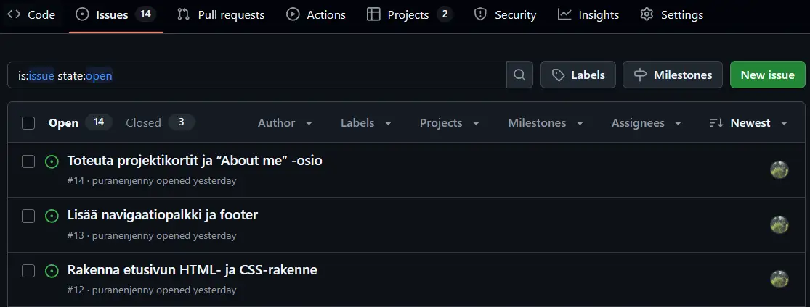
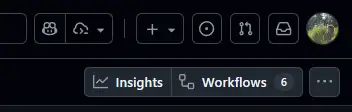
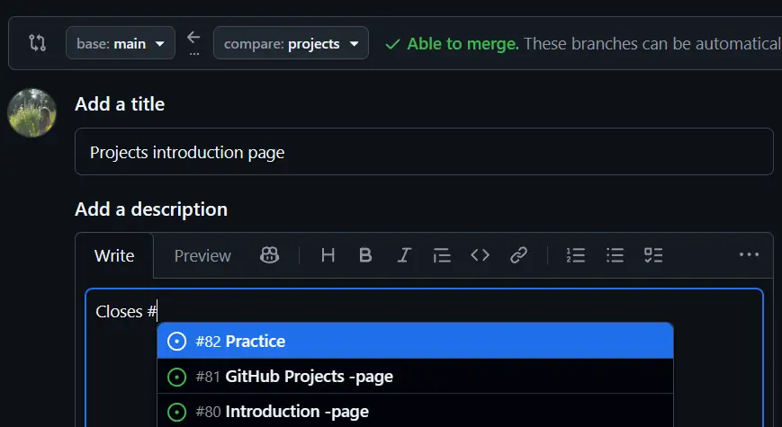

GitHub Projects on GitHubin sisäänrakennettu työkalu projektinhallintaan. Se
on suhteellisen uusi ominaisuus, jonka käyttö on yleistymässä nopeasti
ohjelmistokehitystiimeissä ja pienemmissä projekteissa. Työkalun avulla voi suunnitella,
seurata ja organisoida kehitystyötä suoraan samassa ympäristössä, jossa
lähdekoodi sijaitsee.
GitHub Projects perustuu samaan ideaan kuin muut ketterät työkalut, kuten Trello tai
Jira, mutta se on tiiviisti sidottu GitHubin toimintoihin, kuten esimerkiksi
issueihin (GitHubin tiketti) ja pull requesteihin.
GitHub Projects -projektitaulun luominen
Projektitaulun voi luoda joko omalle käyttäjätilille tai
organisaatiokohtaisesti. Luomisen jälkeen sen voi yhdistää tiettyyn
repositorioon tai käyttää yleisenä projektinhallintatyökaluna.
Projektin luominen omalle käyttäjätilille
Siirry GitHubiin ja
kirjaudu sisään
Klikkaa profiilikuvakettasi oikeassa yläkulmassa ja valitse
Profile
Valitse yläpalkista Projects-välilehti
Valitse New Project
Valitse mallipohja Kanban
Anna projektille nimi esim. Harjoitusprojekti Kanban
Klikkaa Create project -painiketta
Tarkista, että projekti on luotu onnistuneesti
GitHub Projects tarjoaa useita valmiita mallipohjia, jotka on suunniteltu
erilaisiin projektinhallinnan tarpeisiin. Uutta projektia luodessa voit
valita valmiin mallipohjan tai luoda oman taulun tyhjästä.
GitHub Projects mallipohjat
Kanban – yksinkertainen Kanban-taulu, jossa on sarakkeet
Backlog, To do, In progress, In review ja
Done. Sopii projekteihin, joissa halutaan seurata työn etenemistä usean vaiheen
kautta tai hallita laajempia kokonaisuuksia.
Team planning – sisältää sarakkeet To do,
In progress ja Done. Sopii tiimeille, jotka haluavat yksinkertaisen
rakenteen tehtävien perusseurantaan ja sprinttien suunnitteluun.
Bug tracking – suunniteltu virheiden ja ongelmien seurantaan, sisältää
sarakkeet Prioritized bugs, Triage, In review ja
My items. Sopii erityisesti tilanteisiin, joissa halutaan hallita useita
bugiraportteja, palautteita tai korjaustehtäviä yhdessä näkymässä.
Vinkki! Seuraavaksi tutustumme tarkemmin projektin asetuksiin ja GitHub
Projectsin toimintoihin. Testaile säätöjä myös omassa projektissasi, jotta
huomaat, miten ne vaikuttavat projektin hallintaan ja ulkoasuun.
Linkitys ja GitHub Issues
Projektin yhdistäminen repositorioon
Kun olet luonut projektitaulun, voit halutessasi
linkittää sen tiettyyn repositorioon. Klikkaa projektin alapalkista kenttää,
jota käytetään myös yksittäisten issueiden lisäämiseen, kirjoita # ja valitse
listasta oikea repositorio. Linkityksen jälkeen luomasi issuet voidaan liittää suoraan kyseiseen
repositorioon, jolloin niiden hallinta helpottuu. Linkityksen voi tarvittaessa myös poistaa.
Projektin linkitys repositorioon GitHub Projectsissa
Jos olet luomassa projektitaulua tietylle repositoriolle, voit luoda sen suoraan kyseisen
repositorion Projects-välilehdeltä. Jos välilehteä ei näy, tarkista
repositorion asetuksista, että Projects-ominaisuus on käytössä. Näin luotu taulu linkittyy
automaattisesti kyseiseen repositorioon.
Yksittäinen projekti voi myös sisältää useiden eri repositorioiden issueita,
jos se on luotu käyttäjä- tai organisaatiotasolle.
GitHub Issues -välilehti
Jokaisessa GitHub-repositoriossa on oma
Issues-välilehti, jota käytetään projektin tehtävien ja kehitysehdotusten
hallintaan. Jokainen issue eli tiketti toimii keskusteluketjuna, jossa voidaan kuvata
tehtävä, raportoida virhe tai ehdottaa parannusta.

Repositorion Issues -välilehti
Issues-välilehdellä näet kaikki avoimet ja suljetut tiketit, voit suodattaa niitä tilan,
labelien, vastuuhenkilön tai aikarajojen perusteella, sekä luoda uusia kohdasta
New issue. Jokaisella issuella on oma ID-numeronsa (esim. #12),
jonka avulla siihen voidaan viitata helposti esimerkiksi commiteissa tai
pull requesteissa.
Käytännössä Issues-välilehti on se paikka, jossa tehtävät eli
issuet luodaan ja kirjoitetaan tekstimuodossa, kun taas
Projects-taulu toimii näiden samojen tehtävien visuaalisena seurantatauluna.
Jos luot issuen suoraan Projects-taululla ja projekti on linkitetty repositorioon, GitHub luo
automaattisesti uuden issuen myös Issues-välilehdelle.
Kun Projects-taulu on linkitetty tiettyyn repositorioon, sen tehtävät voidaan
liittää suoraan kyseisen repositorion issueihin. Näin Issues-välilehti toimii projektitaulun
tehtävälistana, kun taas Projects puolestaan tarjoaa niille visuaalisen seurantataulun.
Työskentely projektitaululla
Tehtävien lisääminen ja seuranta
GitHub Projectsin ydinominaisuus on tikettien eli
issueiden hallinta.
Projektiin voidaan lisätä tehtäviä monella eri tavalla. Yksi niistä on painaa pikanäppäimiä
CTRL + Space, jolloin aukeaa tekstikenttä johon voit kirjoittaa tehtävän nimen
ja painaa Enter lisätäksesi sen tauluun.
Voit myös kirjoittaa #, jolloin avautuu lista repositorioista. Valitse haluamasi
repositorio, niin näet sen olemassa olevat issuet, jotka voit lisätä tauluun, tai
vaihtoehtoisesti luo uusi issue suoraan kyseiseen repositorioon.
Issueita voi lisätä joko issueina tai kevyempinä hahmotelmina eli
drafteinä.
Issuen ja draftin lisääminen GitHub Projectsissa
Jokaiselle lisätylle tehtävälle voidaan määrittää edellisessä kappaleessa käsiteltyjä tietoja,
kuten
prioriteetti, vastuuhenkilö, koko,
tagit, jne. Tehtäviä voi myös suodattaa ja
ryhmitellä näiden määritysten mukaan, jolloin isommankin projektin hallinta on
helpompaa.
GitHub Projects -näkymät (views)
GitHub Projects tarjoaa useita eri näkymiä, joiden avulla tehtäviä voi hallita ja visualisoida
eri tavoilla. Ne on jaettu kolmeen kategoriaan, joita ovat
board, table ja roadmap. Valmiissa
mallipohjissa (project templates) on esiasetetut näkymät, mutta voit myös luoda omia
näkymiä tarpeidesi mukaan.
Näkymien avulla voidaan esimerkiksi suunnitella sprinttejä, seurata työn etenemistä ja
priorisoida ominaisuuksia tarpeen mukaan. Näkymiä voi
muokata omien tarpeiden mukaan, sekä
tallentaa ja jakaa tiimin sisällä, jolloin eri roolit näkevät juuri heille
tärkeimmän tiedon.
Board - visuaalinen Kanban-näkymä, jossa tehtävät etenevät sarakkeiden
välillä
Board-näkymä GitHub Projectsissa
Table - taulukkonäkymä, johon voidaan lisätä sarakkeita, suodatuksia ja
järjestyksiä tehtävien seurantaan
Repositorion Issues -välilehti
Issues-välilehdellä näet kaikki avoimet ja suljetut tiketit, voit suodattaa niitä esim.
tilan, vastuuhenkilön tai aikarajojen perusteella, sekä luoda uusia kohdasta
New issue. Jokaisella issuella on oma ID-numeronsa (esim.
#12), jonka avulla siihen voidaan viitata helposti esimerkiksi
commiteissa tai pull requesteissa.
Käytännössä Issues-välilehti on se paikka, jossa tehtävät eli
issuet luodaan ja kirjoitetaan tekstimuodossa, kun taas
Projects-taulu toimii näiden samojen tehtävien visuaalisena
seurantatauluna. Jos luot issuen suoraan Projects-taululla ja projekti on linkitetty
repositorioon, GitHub luo automaattisesti uuden issuen myös Issues-välilehdelle.
Kun Projects-taulu on linkitetty tiettyyn repositorioon, sen tehtävät
voidaan liittää suoraan kyseisen repositorion issueihin. Näin Issues-välilehti toimii
projektitaulun tehtävälistana, kun taas Projects puolestaan tarjoaa niille visuaalisen
seurantataulun.
Työskentely projektitaululla
Tehtävien lisääminen ja seuranta
GitHub Projectsin ydinominaisuus on tikettien eli
issueiden hallinta.
Projektiin voidaan lisätä tehtäviä monella eri tavalla. Yksi niistä on painaa pikanäppäimiä
CTRL + Space, jolloin aukeaa tekstikenttä johon voit kirjoittaa tehtävän
nimen ja painaa Enter lisätäksesi sen tauluun.
Voit myös kirjoittaa #, jolloin avautuu lista repositorioista. Valitse
haluamasi repositorio, niin näet sen olemassa olevat issuet, jotka voit lisätä tauluun, tai
vaihtoehtoisesti luo uusi issue suoraan kyseiseen repositorioon.
Issueita voi lisätä joko issueina tai kevyempinä hahmotelmina eli
drafteinä.
Roadmap-näkymä GitHub Projectsissa
GitHub Projectsissa jokaisella näkymällä (view) on omat asetuksensa, joita voi
muokata klikkaamalla näkymän otsikon oikealla puolella olevaa pientä nuolta (▼).
Taulukon layoutin säädöt GitHub Projectsissa
Layout – valitse näkymäksi Table, Board tai
Roadmap
Fields – määritä, mitä kenttiä tai sarakkeita näkymässä näytetään
Group by – ryhmittele tehtävät esimerkiksi vastuuhenkilön, statuksen tai
prioriteetin mukaan
Sort by – järjestä tehtävät esimerkiksi päivämäärän, prioriteetin tai
koon perusteella
Slice by – rajaa näkymää esimerkiksi sprintin, aikajakson tai muun
kentän perusteella
Charts – luo kaavio, joka visualisoi valitun näkymän tilanteen (esim.
tehtävien jakauman eri tilojen välillä)
Näkymän sarakkeiden (fields) järjestystä ja näkyvyyttä voi muokata monella eri tavalla.
Sarakkeita voi siirtää
vetämällä ja pudottamalla tai klikkaamalla kentän otsikon kolmen pisteen
valikkoa ja valitsemalla Move left tai Move right. Samasta valikosta voi
myös piilottaa kentän, valita järjestyksen
nousevaksi tai laskevaksi, sekä avata tarkemmat
Field settings -asetukset. Sarakkeen voi myös nimetä uudelleen, siirtää tai
poistaa kokonaan.
Huom! Muista painaa Save changes ennen kuin poistut
näkymästä, koska muuten tekemäsi muutokset eivät tallennu.
Voit muokata projektikohtaisia asetuksia suoraan GitHubissa. Avaa projektinäkymässä
oikeasta yläkulmasta kolmen pisteen valikko ja valitse
Settings, jolloin pääset määrittämään projektin tietoja.
Name – projektin nimi
Default Repository – oletusrepositorio
Description – lyhyt kuvaus projektista
ReadMe – projektin README-tiedosto
Visibility – projektin näkyvyys (julkinen tai yksityinen)
Manage access – projektin käyttöoikeudet
Custom fields – taulun eri kenttien määritykset (kuten eri
kokovaihtoehdot), sekä uusien kenttien luominen
Custom fields -asetukset GitHub Projectsissa
Automaatiot ja analytiikka
GitHub Projects sisältää useita työkaluja, jotka auttavat automatisoimaan projektinhallintaa ja
tarjoavat analytiikkaa projektin etenemisen seuraamiseen. Näihin työkaluihin pääsee käsiksi
projektin vasemman yläreunan valikoista Insights ja Workflows.
Automaatiot GitHub Projectsissa
GitHub Projects sisältää sisäänrakennettuja automaatiotyökaluja, joiden avulla
voit vähentää manuaalista työtä ja pitää projektin ajan tasalla ilman jatkuvaa päivittämistä.
Automaatiot voivat esimerkiksi lisätä uusia tehtäviä tauluun automaattisesti, siirtää tehtäviä
seuraavaan sarakkeeseen tai arkistoida valmiit tehtävät, kun tietyt ehdot täyttyvät.
GitHub Projects tarjoaa useita valmiiksi määritettyjä
automaatiotyönkulkuja, mutta voit myös luoda omia tarpeidesi mukaan.
Automaatiot löytyvät projektin asetusten vasemmalta puolelta kohdasta
Workflows. Sieltä voit ottaa käyttöön valmiita automaatioita tai määrittää
täysin uusia sääntöjä projektin hallintaan.

Workflows-asetusvalikko GitHub Projectsissa
Esimerkkejä valmiista automaatioista
Lisää uusia issueita tai
pull requesteja
automaattisesti projektiin, kun ne täyttävät tietyt ehdot (esim.
label:bug)
Päivittä tehtävän tilan automaattisesti, kun siihen liittyvä pull request suljetaan tai issue
merkitään valmiiksi
Arkistoi valmiit tehtävät automaattisesti, kun ne ovat olleet
Done-tilassa tietyn ajan
Asettaa oletusarvoja, kuten prioriteetin, vastuuhenkilön tai sprintin, uusille tehtäville
Issuen sulkeminen pull requestin avulla
GitHubissa voit sulkea issuet automaattisesti
tekemällä sen suoraan pull requestin kautta. Kun kirjoitat PR:n kuvaukseen tietyt avainsanat ja
viittaat issuen numeroon, GitHub sulkee sen automaattisesti, kun pull request mergetään.
Käytä jotain seuraavista muodoista PR:n kuvauksessa, jossa
#80 on suljettavan issuen numero.
Closes #80
Fixes #80
Resolves #80
Kun pull request yhdistetään (merge), GitHub tunnistaa komennon ja sulkee viitatun
issuen automaattisesti, eli siirtää sen Kanban-taululla tilaan Done. Tämä helpottaa
projektin seurantaa ja pitää sekä issue-listan että projektitaulun ajan tasalla ilman
manuaalista työtä.

Esimerkki issuen sulkemisesta automaattisesti pull requestin avulla
Analytiikka GitHub Insightsin avulla
Analytiikka GitHub Insights:in avulla
Insights-näkymässä voit luoda omia kaavioita ja mukauttaa niitä valitsemalla, mitä tietoja
niissä näytetään. Esimerkiksi voit tarkastella
Tehtävien jakaumaa eri tiloissa (To do, In progress, Done)
Tiimin työmäärän kehitystä ajan myötä
Sprinttien valmistumisastetta tai backlogissa makaavien tehtävien määrää
Insights-näkymä GitHub Projectsissa
GitHub Projectsin tarkoitus on tarjota ketterä ja mukautuva tapa hallita kehitystyötä suoraan
siellä, missä koodi asuu, eli GitHubissa.